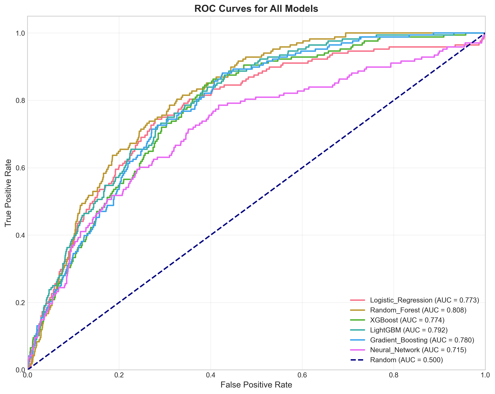

PICU死亡率预测分析系统
基于机器学习的重症监护室死亡率预测分析
报告生成日期：2026年01月07日
数据来源：PICU临床数据集 | 模型版本：v2.0
项目摘要
本系统采用机器学习方法对PICU患者死亡率进行预测分析，通过多个模型的训练和评估，为临床决策提供数据支持。以下为项目关键指标：
Random Forest
最佳模型
AUC-ROC: 0.8079
0.8079
AUC-ROC
(最佳模型)
0.2430
F1分数
(最佳模型)
6
评估模型
全面对比
关键发现：随机森林模型在AUC-ROC指标上表现最佳（0.8079），显示出较好的分类性能，适合用于PICU死亡率预测任务。所有模型均采用5折交叉验证，以确保结果的稳定性。
模型性能比较
以下是六个不同机器学习模型的性能指标对比，使用5折交叉验证计算平均值：
| 模型 | 准确率 | 精确率 | 召回率 | F1分数 | AUC-ROC |
|---|---|---|---|---|---|
| Logistic Regression | 0.7530 | 0.1583 | 0.6786 | 0.2568 | 0.7730 |
| Random Forest 🏆 | 0.8881 | 0.2115 | 0.2857 | 0.2430 | 0.8079 |
| XGBoost | 0.8668 | 0.1803 | 0.3155 | 0.2294 | 0.7740 |
| LightGBM | 0.8645 | 0.2043 | 0.3988 | 0.2702 | 0.7916 |
| Gradient Boosting | 0.8975 | 0.2088 | 0.2262 | 0.2171 | 0.7798 |
| Neural Network | 0.8990 | 0.2000 | 0.2024 | 0.2012 | 0.7155 |
性能分析：随机森林模型在AUC-ROC指标上表现最佳，而神经网络模型在准确率上最高。LightGBM模型在召回率上表现最好（0.3988），这表明它更擅长识别正类样本。不同模型在不同指标上各有优势，需要根据临床实际应用场景（如注重减少漏诊还是误诊）选择合适的模型。
可视化图表
以下图表展示了模型评估的关键结果。图片存储在./figures/model_evaluation/目录下：
GitHub部署说明：请确保图片文件已上传到GitHub仓库的./figures/model_evaluation/目录下，与HTML文件在同一仓库中。
ROC曲线对比
ROC曲线图片加载失败请确保图片文件位于: ./figures/model_evaluation/roc_curves_all_models.png
所有模型的ROC曲线对比，曲线下面积(AUC)越大表示模型性能越好
混淆矩阵
 混淆矩阵图片加载失败
混淆矩阵图片加载失败请确保图片文件位于: ./figures/model_evaluation/confusion_matrices.png
各模型的混淆矩阵，展示真阳性、假阳性、真阴性、假阴性的分布
模型性能对比
 模型性能对比图片加载失败
模型性能对比图片加载失败请确保图片文件位于: ./figures/model_evaluation/model_performance_comparison.png
各模型在不同性能指标上的对比可视化
 特征重要性图片加载失败
特征重要性图片加载失败